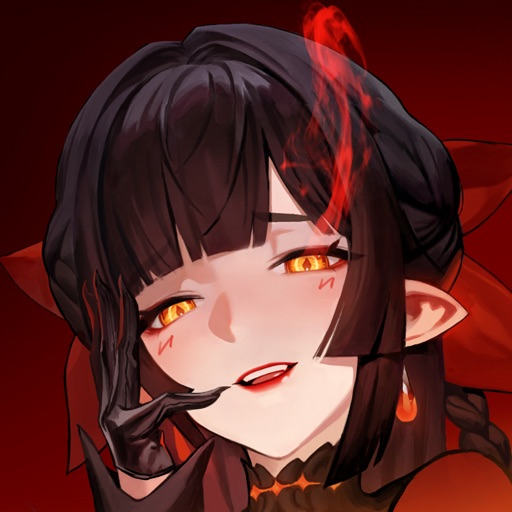

스타세일러 영웅추천 하이디 픽업 캐릭터 정보 초반 파티 조합 컴투스홀딩스 수집형RPG
지난번엔 출시 첫날 리세마라 방법이랑 쿠폰까지 한 번 정리해 드렸었는데요, 그때는 저도 게임을 막 시작한 참이라 "어떤 캐릭터가 좋다"까지는 자신 있게 못 짚었어요. 그 사이 스타 세일러를 사흘 정도 굴려보고, 커뮤니티 반응도 계속 지켜보고 있는데요. 이제 조금씩 "초반엔 이 친구들이 쓸 만하더라" 하는 얘기가 쌓이고 있어서, 오늘은 영웅(캐릭터) 추천이랑 이번에 새로 들어온 픽업 캐릭터 하이디 얘기를 같이 풀어보려고 합니다.
먼저 미리 말씀드릴 게 하나 있는데요, 출시한 지 이제 겨우 사흘이라 공식이든 커뮤니티든 '확정 티어표'라고 부를 만한 건 아직 없습니다. 아래 정리한 내용은 초기 유저 반응과 인게임에서 확인되는 사실을 섞어 정리한 거라, "지금 이런 분위기다" 정도로 참고해 주시면 딱 좋을 것 같아요.

출시 사흘 차, 이제 초반 파티 그림이 조금씩 잡혀가요.
이미지 출처: 애플 앱스토어 스타 세일러 · 네이버 본문엔 받아서 재업로드 권장
파티에 넣을 캐릭터 후보를 하나씩 늘려가는 중이에요.
지금 초반 추천으로 자주 꼽히는 영웅들
일단 표부터 보여드릴게요. 확정 순위가 아니라 "초반에 쓸 만하다"고 자주 언급되는 캐릭터들을 정리한 표라고 봐주시면 됩니다.
| 캐릭터 | 역할·설명 | 초반 반응 |
|---|---|---|
| 하이디 언더본 | SSR · 이번 출시 픽업 | 리세마라 1순위로 가장 많이 거론 |
| 니나 스팅블레이드 | SSR · 아름다운 배신자·이중 스파이 | 전용무기 세트로 자주 추천 |
| 카이라 | SSR | 리세마라 상위 후보로 언급 |
| 아이리스 | 빛 속성 서브 딜러 · 상시 획득 | 속성 상성 걸리면 활용도 높다는 평 |
| 프린세스 젠 / 에단 | - | 파티 구성 후보로 함께 거론 |
보시면 하이디랑 니나, 카이라 세 명이 유독 자주 묶여 나오는데요. 이 셋이 지금 리세마라 판단 기준으로 가장 많이 언급되는 편이라고 보시면 될 것 같아요. 아이리스는 픽업은 아니고 상시로 얻을 수 있는 빛 속성 서브 딜러인데, 상대 속성에 따라 확실히 힘을 쓴다는 반응이 있어서 파티 두 번째 자리로 챙기는 분들이 꽤 계시더라고요.
🌸 리세마라 이렇게 노려보세요
- 이번 픽업 하이디부터 노려보기 (SSR·출시 확률업)
- 안 나오면 니나 or 카이라로 방향 틀기
- 캐릭터 하나만 보지 말고 전무(전용무기)도 같이 확인
- 상시 캐릭터 아이리스는 리세마라 대상 아니어도 파티엔 쓸모 있음
그림자 엘프답게 분위기부터 남다른 캐릭터예요.
이번 픽업 하이디 언더본, 어떤 캐릭터냐면요
이번 출시 기념 픽업으로 확률이 올라간 캐릭터가 바로 하이디 언더본인데요. 불의 화신과 계약을 맺은 그림자 엘프라는 설정을 갖고 있고, 등급은 SSR이에요. 픽업이랑 같이 SSR 메모리피스 「하이디가 보는 세상」도 새로 추가돼서, 하이디를 뽑을 계획이면 이 메모리피스까지 같이 노리는 게 좋습니다.
출시 기념으로 하이디를 포함한 고정 프리셋 파티로 체험 스테이지도 열려 있는데요, 이 스테이지를 완료하면 다이아 보상까지 챙길 수 있으니 하이디를 못 뽑았더라도 일단 이 체험판으로 캐릭터 감을 먼저 잡아보시는 걸 추천드려요. 다만 픽업이 언제까지 이어지는지는 정확한 종료일이 따로 공지된 걸 못 찾았습니다. 확률업 이벤트는 보통 인게임 공지나 공식 라운지에 기간이 걸리는 편이라, 노리고 계신 분들은 접속하실 때 이벤트 탭 한 번씩 확인해두시는 게 안전해요.
| 구분 | 내용 |
|---|---|
| 등급 | SSR |
| 설정 | 불의 화신과 계약한 그림자 엘프 |
| 동반 콘텐츠 | SSR 메모리피스 「하이디가 보는 세상」 |
| 체험 스테이지 | 하이디 고정 프리셋 · 완료 시 다이아 보상 |
| 종료일 | 미공지 — 인게임/공식 라운지 확인 🔍 게임 내 확인 |
캐릭터만 보지 말고 전무(전용무기)도 같이 챙기세요
여기서 하나 짚고 넘어갈 게 있는데요, 스타 세일러 커뮤니티에서는 캐릭터 자체보다 전무, 그러니까 전용무기가 사실상 '본체'라는 얘기가 정설처럼 돌고 있어요. 그래서 리세마라할 때도 캐릭터 하나만 보고 판단하지 말고, 캐릭터+전무 세트로 나왔는지를 같이 확인하는 게 좋다고 하더라고요. 캐릭터는 뽑았는데 전무가 없으면 성능이 반쪽짜리인 느낌이라는 반응도 있고요.
같이 알아두면 좋은 게 메모리피스인데요, 장비나 유물 같은 개념으로 캐릭터를 한 번 더 성장시키는 시스템이에요. 여기도 SSR 등급이 존재하고, 커뮤니티에서는 이 메모리피스 성장이 은근한 병목 구간으로 꼽히더라고요. 하이디처럼 픽업 캐릭터에 전용 메모리피스가 같이 나오는 경우엔, 캐릭터랑 메모리피스를 세트로 챙겨야 진짜 성능이 나온다고 보시면 될 것 같아요.
캐릭터 하나만 보지 말고 전무·메모리피스까지 세트로 챙기는 게 포인트예요.
전투는 브레이크·오버드라이브 조합, 자동전투 믿지 마세요
스타 세일러는 7개 클래스에 무료로 얻는 동료가 16종, 출시 오리지널 캐릭터가 23종이나 되는 꽤 규모 있는 수집형 RPG인데요. 2성에서 3성으로 각성시키는 성장 구조에, 속성 상성을 따지는 전투까지 겹쳐서 초반엔 챙길 게 좀 많아요. 여기에 소환수 시스템도 있는데, 다른 게임과 다르게 소환수엔 속도 스탯이 없는 게 이 게임 밸런스의 특징 중 하나라고 하네요.
전투 자체는 상대 약점을 노려 방어를 무너뜨리는 브레이크랑, SP를 채워 강한 한 방을 꽂는 오버드라이브, 그리고 버스트 찬스 타이밍에 맞춰 누르는 QTE까지 겹쳐서 손이 좀 가는 구조예요. 그래서인지 자동전투는 일부러 약하게 설계돼 있다는 얘기가 많은데요, 직접 이것저것 눌러보니 확실히 자동으로만 돌리면 스킬 연계가 제대로 안 나오는 느낌이더라고요. 초반엔 답답해도 수동으로 몇 판 돌려보시는 걸 추천드려요.
쿠폰이랑 자세한 리세마라 방법은 여기서
쿠폰 코드나 리세마라 절차 자체는 지난 글에서 이미 자세히 다뤄서 여기선 짧게만 짚을게요. GRANDLAUNCH100 쿠폰이 아직 살아 있는 걸로 알고 있는데, 정확한 유효기간은 공식 라운지에서 한 번 더 확인해보시는 게 안전해요. 리세마라 절차나 계정 초기화 방법이 궁금하신 분들은 아래 링크로 넘어가시면 더 자세히 나와 있습니다.
영웅추천·하이디 픽업 정리하며
사흘 굴려본 소감을 정리하면, 지금은 하이디·니나·카이라 셋이 리세마라 판단 기준으로 가장 많이 오르내리고, 그중에서도 이번 픽업인 하이디를 우선 노려보는 분들이 많은 분위기예요. 다만 아직 출시 초반이라 이 반응도 며칠 지나면 또 바뀔 수 있으니, 여기 정리한 내용은 참고만 하시고 결국은 직접 몇 판 돌려보면서 손에 맞는 캐릭터를 찾아가시는 게 제일 정확할 것 같아요. 저도 조금 더 굴려보고 확실한 그림이 잡히면 다시 정리해서 들고 올게요.
✔ 스타 세일러 같이 보기 좋은 내용
· 스타 세일러 사전예약 총정리 — 게임 소개·콕스 아트·5인 파티 시스템 (봄딩 '스타 세일러' 카테고리)
· 스타 세일러 출시 첫날 가이드 첫인상 정리 — 첫날 동선·튜토리얼 순서 (봄딩 '스타 세일러' 카테고리)
· 스타 세일러 리세마라 가이드 쿠폰 정리 — 쿠폰 코드·리세마라 절차 상세 (봄딩 '스타 세일러' 카테고리)